2,(4 + 5) 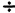 2}, that is, {2.5, 4.5}. Similarly, the centroid of pair DE is {4.5, 2.5}. The other centroids are the same as before.
2,(4 + 5) 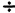 2}, that is, {2.5, 4.5}. Similarly, the centroid of pair DE is {4.5, 2.5}. The other centroids are the same as before.
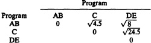
 3,(4 + 5 + 6) 3}, that is, {2,5}.
3,(4 + 5 + 6) 3}, that is, {2,5}.
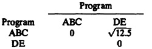
| Previous | Table of Contents | Next |
2,(4 + 5) 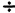 2}, that is, {2.5, 4.5}. Similarly, the centroid of pair DE is {4.5, 2.5}. The other centroids are the same as before.
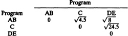
3,(4 + 5 + 6) 3}, that is, {2,5}.
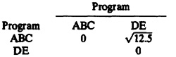
The results of the clustering process can be represented as a spanning tree called a dendrogram. Each branch of the tree represents a cluster and is drawn vertically to a height where the cluster merges with neighboring clusters. The spanning tree for Example 6.3 is shown in Figure 6.7. Components A and B merge at a height of 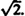 Components D and E also merge at the same height. The next me is shown to occur at a height of when AB merges with C. Finally, at 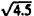 all five components merge into one cluster.
The purpose of drawing the spanning tree is to be able to obtain clusters for any given maximum allowable intracluster (or equivalently minimum allowable intercluster) distance. A horizontal line drawn at the specified height cuts the spanning tree at the desired clusters. For example, if the maximum allowable intracluster distance is 3, a horizontal line (shown broken in Figure 6.7) drawn at this height cuts the two branches of the tree representing clusters ABC and DE.
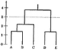
FIGURE 6.7 Dendrogram (spanning tree) for the clustering example.
After obtaining the clusters, one should assign all measured components to the clusters. Clusters with very small populations can be discarded, particularly if the total resource demands of all members of the cluster have an insignificant impact on the system performance. Notice that the importance of the cluster is measured primarily by its total resource demands and not by the population size. A cluster having one component but using 50% of the system resources cannot be discarded regardless of its small size.
The next step is to interpret clusters in functional terms. If a majority of the components in a cluster belong to a single application environment, for example, a business application, it is helpful to name the cluster accordingly. Since the components of the cluster have similar resource demands, it is generally possible to label clusters by their resource demands, for example, CPU bound or I/O bound.
Finally, one or more representative components from each cluster are selected for use as a test workload in performance studies. The number of representatives can be proportional to the cluster size, to the total resource demands of the cluster, or to any combination of the two.
Clustering has been used successfully to characterize workloads in many environments. However, unless it is done very carefully, it is possible to get conflicting conclusions from the same data.
The first problem with clustering is related to the definition of the goal itself. In general, the goal is to minimize the intracluster variance or maximize the intercluster variance. Figure 6.8 shows four different plots for two parameters. In each case, there are two natural clusters. However, in each case, minimization of variance would lead to final clusters that are quite different from those visible to the eye.
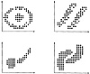
FIGURE 6.8 Problems with clustering
Clustering is better than random selection of programs. However, the results of clustering are highly variable. There are no rules for selection of parameters, distance measure, or scaling. A different choice of any of these may lead to a totally different set of clusters and, hence, different conclusions.
Although the final step in clustering is to label each cluster by functionality, it is difficult in some cases. For example, in one study, editing programs appeared in 23 different clusters. It may have been more meaningful to characterize an average editing program rather than to characterize 23 clusters having no functional meaning.
Clustering is not very helpful if the goal is to compare the workload at different sites. Each site results in a different set of clusters, which cannot be compared with other sites.
Finally, clustering is a laborious process requiring many repetitions of the analysis and consuming a lot of system resources such as storage space.
| TABLE 6.7 Data for Exercises 6.1 and 6.2 | ||||||
|---|---|---|---|---|---|---|
| Program Name | Function | CPU Time | I/O’s | |||
| TKB | Linker | 14 | 2735 | |||
| MAC | Assembler | 13 | 253 | |||
| COBOL | Compiler | 8 | 27 | |||
| BASIC | Compiler | 6 | 27 | |||
| Pascal | Compiler | 6 | 12 | |||
| EDT | Text editor | 4 | 91 | |||
| SOS | Text editor | 1 | 33 | |||
Copyright © John Wiley & Sons, Inc.
| ||||||
){kind=link}
){kind=link}
){kind=link}
){kind=link}